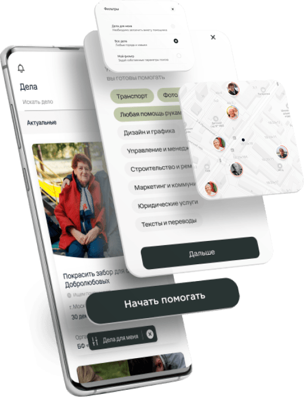

<section class="results">
  <svg
    width="3054"
    height="125"
    viewBox="0 0 3054 125"
    fill="none"
    xmlns="http://www.w3.org/2000/svg"
    class="results-curve"
  >
    <path
      d="M1525.5 79.5C929.054 79.6349 0.222412 1 0.222412 1C-0.277588 42.3333 0.221218 125 0.221218 125C0.221218 125 2414.39 123.833 3053.72 116.5V0C3053.72 0 2123.12 79.3648 1525.5 79.5Z"
      fill="white"
      class="results-curve-img"
    ></path>
  </svg>
  <div class="wrapper">
    <div class="results-wrapper">
      <div class="results-phone-thumb">
        
      </div>
      <div class="results-info">
        <h2 data-aos="fade-up" data-aos-duration="800" class="results-title">
          Результат
        </h2>
        <ul class="results-list">
          <li
            data-aos="fade-up"
            data-aos-duration="800"
            class="results-list-el"
          >
            Расширили и усовершенствовали <br />
            функционал приложения «<b>Помощь</b>»
          </li>
          <li
            data-aos="fade-up"
            data-aos-duration="800"
            class="results-list-el"
          >
            Создали полноценный раздел «<b>Дело</b>», который стал одним&nbsp;из
            основных инструментов для осуществления добрых дел
          </li>
        </ul>
      </div>
    </div>
  </div>
</section>
